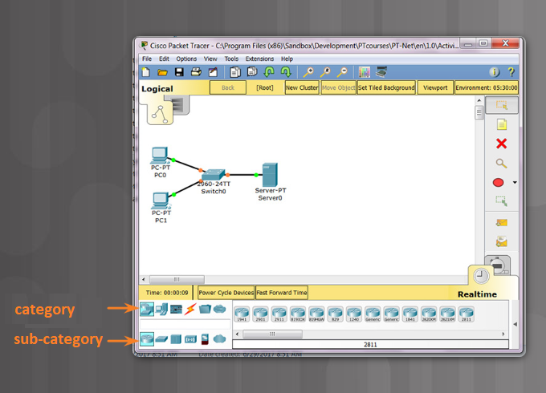
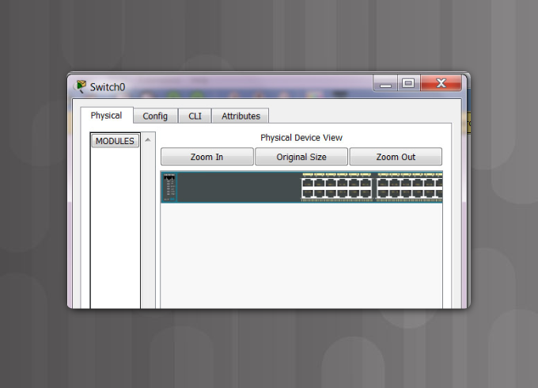
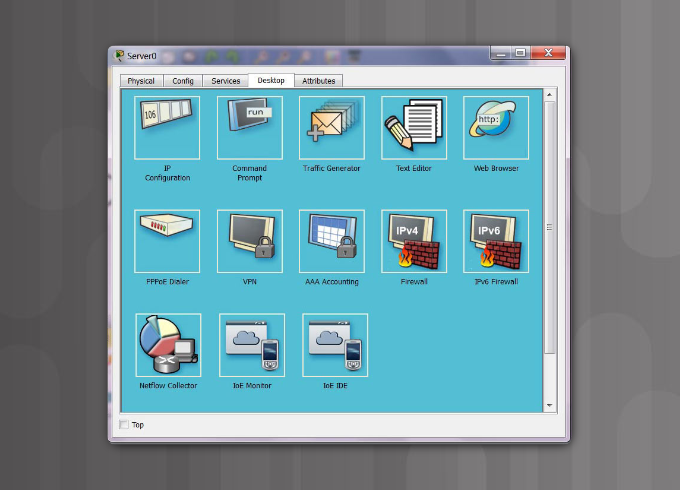
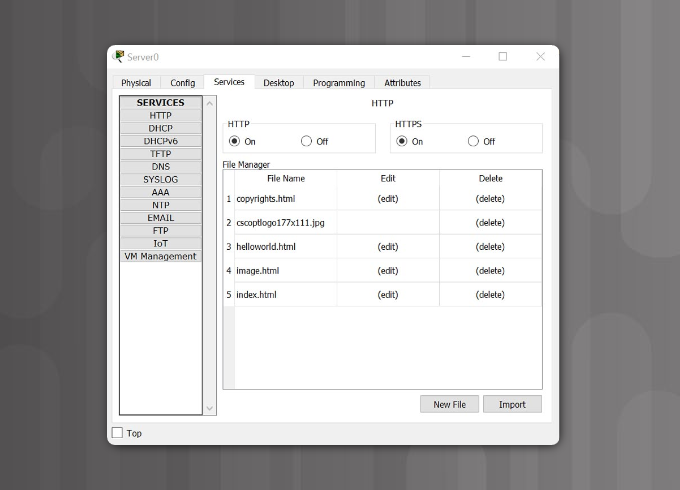
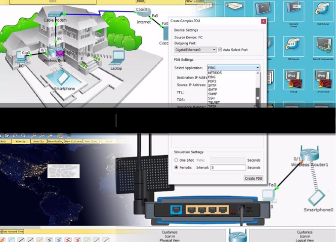
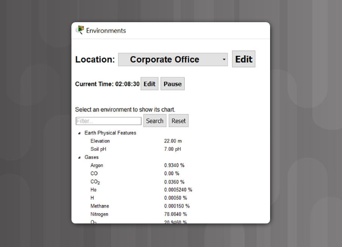
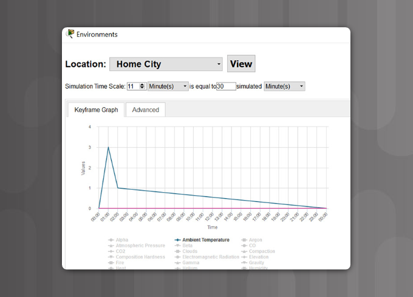
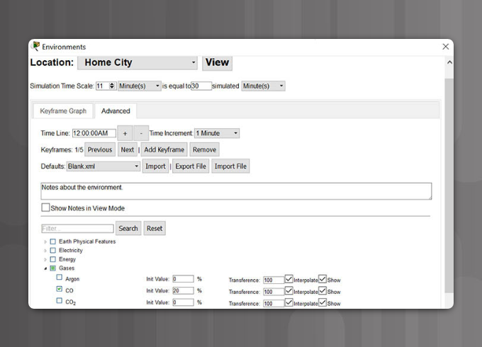
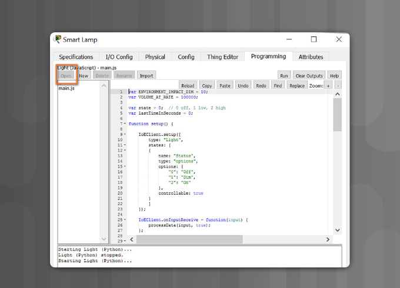
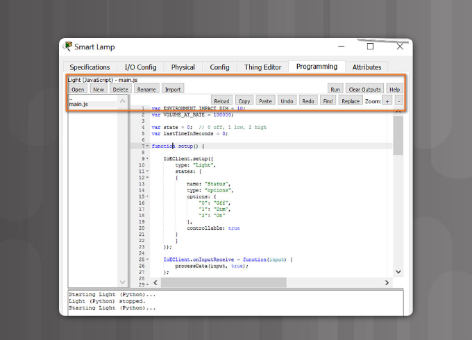

Networking Academy
Introduction to Packet Tracer
First Time in This Course
Preface
This Introduction to Packet Tracer course is designed for new users of Packet Tracer
for self-study and familiarization with the tool used in many Networking Academy courses.
It is not the intention of this course to teach networking and IoT technology.
If available, we encourage you to enroll in networking and IoT courses at your institution
to learn more. There is also a self-enroll course available on NetAcad.com called introduction
to IoT that will help you get started on the topic.
The Cisco Networking Academy Facebook site is where you can meet and engage with
other Networking Academy students from around the world. You may be able to receive peer to peer
support if you have questions on Packet Tracer.
Support and Resources
Download and install the latest version of Packet Tracer
Chapter 1: Introduction to Packet Tracer
Welcome
Packet Tracer is an exciting network design, simulation and modelling tool that allows you
to develop your skill set in networking, cybersecurity, and the Internet of Things (IoT).
It allows you to model complex systems without the need for dedicated equipment.
It is used across numerous Cisco Academy courses to help develop and assess the skill set
necessary for successful completion of the course.
n this chapter, Packet Tracer is introduced and instructions are provided to allow you to download and install it.
Overview of Packet Tracer
Cisco Packet Tracer is an innovative network simulation and visualization tool.
This free software helps you to practice your network configuration and
troubleshooting skills via your desktop computer or an Android or iOS based mobile device.
Packet Tracer is available for both the Linux and Windows desktop environments.
With Packet Tracer you can choose to build a network from scratch,
use a pre-built sample network, or complete classroom lab assignments.
Packet Tracer allows you to easily explore how data traverses your network.
Packet Tracer provides an easy way to design and
build networks of varying sizes without expensive lab equipment.
While this software is not a replacement for practicing on physical routers,
switches, firewalls, and servers, it provides too many benefits to ignore!
Introduction to Packet Tracer video

Introduction to Packet Tracer - transcript of video.pdf
Download and Install Packet Tracer
Students commonly use Packet Tracer to:
- Prepare for a certification exam.
- Practice what they learn in networking courses.
- Sharpen their skills for a job interview.
- Examine the impact of adding new technologies into existing network designs.
- Build their skills for jobs in the Internet of Things.
- Compete in Global Design Challenges
Packet Tracer is an essential learning tool used in many Cisco Networking Academy courses.
Click Play in the video for a detailed walk-through of the Packet Tracer download and installation process.
To obtain and install your copy of Cisco Packet Tracer follow these simple steps:
- Log into your Cisco Networking Academy “I’m Learning” page.
- Select Resources from the menu in the upper right portion of your screen.
- Select Download Packet Tracer.
- Select the version of Packet Tracer you require.
- Save the file to your computer.
- Launch the Packet Tracer install program.
- After installation, close and restart your web browser.
- Launch Cisco Packet Tracer by selecting the appropriate icon.
- When prompted, use your Netacad login information to authenticate.
- Packet Tracer will launch and you are ready to explore its features.
Download and Install Packet Tracer video

Download and Install Packet Tracer - transcript of video.pdf
Summary
At the completion of chapter 1, you should be able to:
- Explain the function and installation of Cisco Packet Tracer.
For additional help and practice using Packet Tracer, please visit the Tutorials located
under Help in the Packet Tracer program. To view some examples of how Packet Tracer
can be used, select File, then Open Samples from the main menu.
Chapter 2: The User Interface
Goals
This chapter introduces the user interface and provides guidance on how to create
a simple network using Packet Tracer.
Getting Started with Packet Tracer
Packet Tracer is a tool that allows you to simulate real networks.
It provides three main menus that allow you to:
- add devices and connect them via cables or wireless
- select, delete, inspect, label, and group components within your network
- manage your network
The network management menu allows you to:
- open an existing/sample network
- save your current network
- modify your user profile or your preferences
For additional help and practice using Packet Tracer, please visit the Tutorials located
under Help in the Packet Tracer program. To view some examples of how Packet Tracer
can be used, select File, then Open Samples from the main menu.
If you have used any program such as a word processor or spreadsheet, you are already familiar
with the File menu commands located in the top menu bar. The Open, Save, Save As, and Exit commands
work as they would for any program, but there are two commands that are special to Packet Tracer.
The Open Samples command will display a directory of prebuilt examples of features and
configurations of various network and Internet of Things devices included within Packet Tracer.
The Exit and Logout command will remove the registration information for this copy of Packet Tracer
and require the next user of this copy of Packet Tracer to do the login procedure again.
Getting Started with Packet Tracer video

Getting Started with Packet Tracer - transcript of video.pdf
Finding and Deploying Devices
Since Packet Tracer simulates networks and network traffic, the physical aspects of these networks
also needs to be simulated. This includes actually finding and deploying physical devices,
customizing those devices, and cabling those devices. After the physical deployment and cabling is done,
then it is time for configuration of the interfaces used to connect the devices.
Finding a device to deploy requires looking in the Device-Type Selection Box.
The Device-Type Selection Box works on the concept of categories and sub-categories as shown in the figure.
The top row of icons represents the category list consisting of:
[Networking Devices], [End Devices], [Components], [Connections],
[Miscellaneous], and [Multiuser].
Each category contains at least one sub-category group.

Device Configuration
Once your network has been created, it is time to configure the devices and components.
Packet Tracer has the capability to configure the different intermediate and end devices
that make up your network. To access the configuration interface of any devices first click
on the device that you wish to configure. A popup window will appear displaying a series of tabs.
Different types of devices have different interfaces.
Device Configuration video

Device Configuration - transcript of video.pdf
GUI and CLI Configuration
For intermediate devices such as routers and switches, there are two methods
of configuration available. Devices can be configured or investigated
via a Config tab (a GUI interface) or a command line interface (CLI) (Figure 1).

The Config tab does not exist in most physical equipment.
This tab is a learning tab in Packet Tracer.
If you don’t know how to use the command line interface, this tab provides a way
to “fill in the blank” to do basic configurations.
It will show the equivalent CLI commands that would do the same thing if using
the Command Line Interface. The CLI interface requires knowledge of device configuration.
For some of the end devices, such as PCs and laptops, Packet Tracer provides a
desktop interface that gives you access to IP configuration, wireless configuration,
a command prompt, a Web browser, and much more (Figure 2).

If you are configuring a server, the server has all of the functions of the Host
with the addition of one more tab, the services tab (Figure 3).

This tab allows a server to be configured as a web server, a DHCP server,
a DNS server, or various other servers visible in the graphic.
Packet Tracer – Configure End devices Instructions
Creating a Simple Network Using Packet Tracer
Now you will use Packet Tracer to create a simple network.

Packet Tracer - Create a Simple Network Using Packet Tracer Instructions
Summary
At the completion of chapter 2, you should be able to:
- Investigate the Packet Tracer User Interface.
For additional help and practice using Packet Tracer, please visit the Tutorials located
under Help in the Packet Tracer program. To view some examples of how Packet Tracer
can be used, select File, then Open Samples from the main menu.
Chapter 3: Simulation Mode
Goals
In this chapter, you learn how to use Packet Tracer’s powerful simulation mode.
This mode allows you to verify device connectivity and to study
how the various types of data traverse your network
Creating PDUs in Simulation Mode
Packet Tracer provides a Simulation mode that allows you to create and
capture PDUs to check several functions within your network, such as:
-
Basic Connectivity – Can all devices communicate with each other?
-
Security – Are access lists functioning as designed?
-
Applications and Services – Are applications and
services such as DNS, HTTP, and FTP functioning as designed?
The default mode for Packet Tracer is Realtime mode.
In Realtime mode the time is continuously running as indicated by the clock
in the lower right hand corner of the worksheet. In Simulation mode,
time can be stopped or slowed to allow users to view data traffic one packet at a time.
Simulation mode is used to observe network traffic in detail with time controlled directly by the user.
Play the video to see how to use Simulation mode to create simple PDUs to replicate ICMP and
ARP functionality and how to create more complex PDUs from a list of protocols
such as DNS, HTTP, Telnet, SSH, FTP, and many more.
Creating PDUs in Simulation Mode video

Creating PDUs in Simulation Mode - transcript of video.pdf
Viewing the Contents of PDUs
Once the PDUs have been captured, you have several ways to view their contents.
Viewing the contents of the PDUs can be used to verify connectivity, verify functionality,
and troubleshoot issues. It is also a great tool for studying or
reviewing the contents of the OSI model layers and the mechanisms of communication.
If viewed in OSI Model mode, you see a summary of the addresses and
contents of the headers at each layer. If you select Inbound or Outbound PDU Details,
the exact format of the appropriate headers is displayed.
Play the video to see how to view PDUs.
Viewing the Contents of PDUs video

Viewing the Contents of PDUs - transcript of video.pdf
Explore Network Functionality Using PDUs
In this lab, you will use the Packet Tracer Simulation mode, to explore network functionality.

Packet Tracer - Explore Network Functionality Using PDUs Instructions
Summary
At the completion of chapter 3, you should be able to:
- Investigate network functionality using Packet Tracer Simulation mode.
For additional help and practice using Packet Tracer, please visit the Tutorials located
under Help in the Packet Tracer program. To view some examples of how Packet Tracer
can be used, select File, then Open Samples from the main menu.
Chapter 4: Packet Tracer Physical View and File Assessment Types
Goals
In this chapter, you are introduced to the Physical view.
This mode allows you to place a logical network topology into a physical context.
Packet Tracer creates various file types.
The file types are introduced in this chapter and we also discuss how Packet Tracer
is used as an assessment tool.
The Packet Tracer Physical View
Now that you know the purpose and the use of the menus in the logical workspace,
we will move on to learn about the physical workspace in Packet Tracer.
The default view for Packet Tracer is Logical,
which is equivalent to creating a logical diagram for the network.
The other type of diagram used in networking is the physical diagram
which not only shows the relationships of the network devices
but also applies building and distance factors in making the design.
Packet Tracer has the physical workspace that allows you to make
your network more realistic by adding backgrounds, buildings, and wiring closets.
These features are important for documentation, design, and visualization.
You can see the actual layout of the network within a room or a building.
This provides valuable information into the flow of traffic and the suitability
and placement of equipment.
The Physical view also has a great feature that shows the wireless coverage areas
based on your equipment placement within buildings.
In this section, you will learn to:
- Navigate the physical workspace.
- Add cities, corporate offices, and branch offices.
- Add backgrounds into the cities and offices.
- Add wiring closets to the offices.
- Place networking devices into racks within the closets.
When the Physical view is shown, the basic organizational scheme is the following:
- intercity
- city
- building
- wiring closet
A user is able to add as many cities, buildings, and wiring closets as they need;
however, there can only be one intercity. Containers of smaller sizes can be added
at any level but larger containers cannot be added into smaller containers.
For example, a building can be added to the intercity,
but a city cannot be added to a building,
and a building cannot be added to a wiring closet.
Play the video to learn how to use the features of the physical workspace.
The Packet Tracer Physical View video

The Packet Tracer Physical View - transcript of video.pdf
Packet Tracer Physical View
In this lab, you will explore the capabilities of Packet Tracer Physical view.
Packet Tracer - Packet Tracer Physical View Instructions
Packet Tracer File Types
Packet Tracer has the ability to create three different types of files.
These file types are used for different purposes and include:
.pkt, .pkz, and .pka.
The .pkt file type is used when a simulated network is built in Packet Tracer and saved.
The .pkt file can also have backgrounds embedded within it.
The .pkz file type is not used very often.
It is a compressed file that allows the inclusion of other files,
such as .pdf files, along with the Packet Tracer files.
The .pka file type is a Packet Tracer Activity file.
This file type contains a Packet Tracer activity plus an instruction window.
The instructions provide a walkthrough of the necessary processes
required to complete the activity, assignment, or assessment.
The instruction window also contains a completion percentage to track
how much of the activity has been successfully completed.
There is also a Check Results feature that can be configured to provide feedback.
Play the video to see the differences and uses of each of the three file types.
Packet Tracer File Types video

Packet Tracer File Types - transcript of video.pdf
Packet Tracer Assessment Types
Packet Tracer is used in the Networking Academy to assist in the design,
creation and testing of networks and network applications.
Packet Tracer is also used for purposes of self-evaluation, practice, and formal assessment.
This section will display and discuss PTSAs and PTMOs.
A PTMO (Packet Tracer as a Media Object) is an assessment item
where a Packet Tracer Activity is part of the assessment item.
Once the .pka is loaded, the student is provided with a small set of instructions to be completed.
Once completed, they are able to return to the item to answer the question based on their work.
PTMOs can be used by themselves or as an item on a quiz or final exam.
A PTSA (Packet Tracer Skills Assessment) is used as a standalone skills-based assessment complete
with a full set of instructions. Students are required to build, modify, and/or troubleshoot a network.
PTSAs are often done in a timed environment.
Once the student has completed the activity, they submit their work to netacad.com.
Some PTSAs are configured to allow students to save their work and continue at a later time.
Once a PTSA has been completed, the student will receive their score plus item level feedback.
They also see a list of objectives of the PTSA along with information about what they did right and what they did wrong.
All forms of feedback are intended to assist the student to improve their skills.
Play the video to see examples of the different assessment uses of Packet Tracer.
Packet Tracer Assessment Types video

Packet Tracer Assessment Types - transcript of video.pdf
Summary
At the completion of chapter 4, you should be able to:
- Investigate the Packet Tracer Physical view.
- Explain Packet Tracer File and Assessment types.
For additional help and practice using Packet Tracer, please visit the Tutorials located
under Help in the Packet Tracer program. To view some examples of how Packet Tracer
can be used, select File, then Open Samples from the main menu.
Chapter 5: IoT Components in Packet Tracer
Goals
In simple terms the IoT is a connection of networked sensors, actuators, and smart devices that collect and share data.
Packet Tracer 7 contains many new features to support the IoT.
This includes the addition of IoT devices that can be configured to react to certain environmental values
such as sun, wind, rain, and humidity.
These devices can be configured to take actions based on the changing environmental values,
such as turning on lights or closing garage doors. The next few chapters include instructions to locate the IoT devices,
to connect them to your network,
to configure and modify scripts to make them function, and to control these devices remotely.
Packet Tracer provides everything you need to create simulated smart homes, smart cities, and smart factories.
Configure IoT Devices using Packet Tracer.
Packet Tracer has a wide variety of sensors and smart devices that will allow you to design smart homes,
smart cities, smart factories, and smart power grids.
To locate the available sensors and smart devices, select End Devices from the Device Selection box
at the lower left-hand side of the screen.
Next select one of the subcategories such as Home.
In the Home subcategory, you will see many IoT devices such as
an air conditioner, ceiling fan, coffee maker, and CO detector.
These devices can be connected to your network wirelessly or with a physical cable.
To connect the devices to your network, you need a device, such as a home gateway or registration server.
To find a home gateway, select Network Devices from the Device Selection box and
then select Wireless Devices from the subcategories.
To control the devices, you have two options:
-
You can interact directly with a device.
Hold down the Alt key and at the same time
click on the device to turn it on or off.
-
You can connect remotely over the network. Using a remote PC,
tablet or smart phone, you can use a web browser
to connect to the home gateway or registration server.
From here, you can turn the devices on or off using
the features of the home gateway or registration server.
To configure devices, click on the device to open it. Once opened, you have a multiple tabs to select:
-
Specifications – describes the features, usage, local and remote control of the device
-
Physical – available modules and power connections
-
Config – shows display name, serial number, network configuration, and IoT server
-
Attributes – display the device attributes such as MTBF, power consumption, and cost
To configuration the home gateway, you click on the device.
Within the device you have multiple tabs to select.
-
Physical – available modules, and power
-
Config – shows display name, interfaces (Internet, LAN, and wireless) to be configured
-
GUI – shows services to be turned on/off
-
Attributes – shows features and values related to device such as: mean time between
failure (MTBF), cost, power sources, and wattage
Play the video to learn about locating, connecting, and configuring IoT devices in Packet Tracer.
IoT Devices in Packet Tracer video

IoT Devices in Packet Tracer - transcript of video.pdf
Add IoT Devices to a Smart Home
In this activity you will open a Packet Tracer file with an existing home network,
explore the devices on the network and then add additional wired and wireless IoT devices.
Packet Tracer - Adding IoT Devices to a Smart Home Instructions
Packet Tracer - Smart Home Network Packet Tracer File
Summary
At the completion of chapter 5, you should be able to:
- What IoT devices are available in Packet Tracer.
- Where IoT devices are located.
- How to connect IoT devices to your network.
- How sensors interact with smart devices.
- How different IoT devices work.
- Basic configuration of smart devices.
For additional help and practice using Packet Tracer, please visit the Tutorials located
under Help in the Packet Tracer program. To view some examples of how Packet Tracer
can be used, select File, then Open Samples from the main menu.
Chapter 6: Creating and Controlling a Small Smart Home Network
Goals
In this chapter you will learn how to connect and control smart devices
using either a Home Gateway device or a remote registration server.
Connecting and Monitoring IoT Devices Using a Home Gateway.
The Home Gateway device acts as a local connection to your IoT smart devices.
This device was designed to provide Internet access, wireless connectivity,
and local logic for smart devices. The Home Gateway device provides an IoT registration service
that is always turned on and an auto discovery service for Things in the local Ethernet and wireless network.
Once connected to the home gateway, the user can control and monitor the smart devices
from their smartphone, tablet, or PC.
Once a home gateway device has been added to the logical workspace, click on the device. You will see the following:
-
Physical tab – the device has an Internet port, four LAN ports, and multiple antennae
-
Config tab – this shows the interfaces and network settings that are configurable
-
GUI tab – this shows the registration server inside the device that allows
for interaction with IoT devices. It is on by default but can be turned off.
-
Attributes tab – This is blank by default but can show features
and values such as MTBF, cost, power source, and wattage.
After connecting the home gateway to an existing network, select the Config tab.
The internet and the wireless interfaces should obtain IP addressing information from the network
To connect an IoT device, such as a fan, wirelessly, click on the fan and select the Config tab.
The simple config tab appears. Select the Advanced button in the lower right hand corner to view more options.
To configure and register the fan with the home gateway:
-
Select I/O Config and then select wireless adapter from the network adaptors dropdown list.
-
Select Config to verify that the fan has established a wireless connection to the correct SSID.
This can also be done visually by viewing the fan in the workspace.
-
Select Config/Settings and select the home gateway as the IoT server registration device.
To control the fan remotely:
-
Add a tablet, PC, or smart phone to the workspace and connect it to the home gateway.
Click on the remote device and select Desktop/IPConfig to verify connectivity.
-
Return to the desktop and select the web browser.
Use the default gateway address from the remote device as the URL.
This is the address of the home gateway.
Once into the home gateway, you should see
the registered fan and be able to modify its settings.
Play the video to learn about creating and controlling a small IoT home network using a home gateway.
Accessing and Monitoring Smart Devices video

Accessing and Monitoring Smart Devices - transcript of video.pdf
Connect Devices to a Home Gateway and Monitor.
In this activity you will add a Home Gateway
and several IoT devices to an existing home network
and monitor those devices through the Home Gateway.

Packet Tracer -:Connect and Monitor IoT Devicea Intructions
Packet Tracer - Smart Home Packet Tracer File
Registering Devices to a Dedicated Registration Server.
IoT devices can also be registered to a dedicated Registration Server
for remote monitoring, configuration, or programming.
The dedicated registration server has the benefit of being able
to provide many other services to your network,
such as Web, DHCP, DNS, email, and FTP.
With a dedicated server, IoT devices would first be connected to a wireless network
and would then be configured to register to the server.
To connect and configure the registration server:
-
Connect the server to your network using a wired or wireless connection.
-
Click on the server and select Desktop/IP configuration.
Ensure that DHCP has been turned on and then verify that
the server is obtaining an IP addresse.
-
Select Services/IoT and turn the Registration Server on.
To configure a remote device to interact with the registration server:
-
Connect a remote device such as a tablet, PC,
or smart phone to the wireless network.
-
Click on the remote device and select Desktop/Web Browser.
Use the IP address of the registration server as the URL.
-
The first time you access the server, you will have to create a user login.
Subsequent visits will require you to login using the login credentials. For security reasons,
it is important to protect your IoT devices by using strong passwords on your server.
To register IoT devices with the Dedicated Server:
-
Click on each device and select the Config tab.
-
Select the remote server option under IoT server and supply the IP address of the server, plus the login information.
-
Use the remote device to verify the presence of the registered IoT devices.
Play the video to learn about creating and controlling a small IoT home network using a dedicated registration server.
Connect IoT Devises to a Registration Server video

Connect IoT Devises to a Registration Server - transcript of video.pdf
Connect and Control Devices using a Registration Server.
In this activity you will add a remote registration server
and several IoT devices to an existing home network
and monitor those devices through the remote registration server.

Packet Tracer -:Connect IoT Devices to a Registration Server Instructions
Packet Tracer - Registration Server Packet Tracer File
Summary
At the completion of chapter 6, you should be able to:
-
You should be able to create and connect IoT devices into a small home network
using the built-in registration server of the home gateway or a dedicated registration server.
For additional help and practice using Packet Tracer, please visit the Tutorials located
under Help in the Packet Tracer program. To view some examples of how Packet Tracer
can be used, select File, then Open Samples from the main menu.
Chapter 7: Packet Tracer Environment Controls
Goals
In this chapter, you will learn:
-
The environmental controls that are available in Packet Tracer.
-
How to configure environmental controls within containers.
-
How smart devices interact with the Packet Tracer environmental elements.
-
How to adjust environmental elements.
-
How to set conditions and take action.
Environmental Controls available in Packet Tracer.
In the Physical Workspace there are containers.
Each container, the intercity, city, buildings, and wiring closets,
all have their own set of environmental values.
There are 24 default environmental elements,
such as temperature, rain, water level, wind speed, and snow.
Many devices or Things affect or respond to the environment in some way.
A Fire Sprinkler will raise the water level and humidity in a container.
An old car will increase various gases and ambient temperature when turned on.
A smoke detector can be used to trigger an alarm when the smoke in environment increases to a certain point.
If there are no devices configured to affect the environment,
their values are looped on a 24-hour cycle.
For example, the sun will come up at 6am and set at 6pm.
The ambient temperature will peak at 25°C at noon.
This cycle is set on the intercity level and its ambient temperature range
will propagate all the way down to the main wiring closet automatically.
If a heater is added to the Corporate Office and turned on,
the temperature inside the Corporate Office will increase along with all the containers within it.
Note however, the heater does not heat up the parent container,
Home City, it will only heat up the child containers.
When the heater is turned off, the Corporate Office will eventually converge
to the parent container's ambient temperature, Home City,
based on its transference value.
Different containers may have different levels of insulation and thus different transference values;
the transference values determine the rate that the child container converges
with the parent container and works the same way for all environment types.
Play the video to see the environmental elements available, how they work and how to modify them.
Environmental Conditions in Packet Tracer video

Environmental Conditions in Packet Tracer - transcript of video.pdf
Configuring the Environment using Containers
Important terms and concepts:
-
Current time – time inside a container that increments by 30 minute increments.
Every 1 second in real time equates to 30 minutes in “Container” time.
The timer goes from 0 (midnight) to 11:59. (Figure 1)

-
KeyFrame – represents a single moment in time
-
KeyFrame graph – A graph that shows the value of environmental elements
at any given point in time throughout the day. (Figure 2)

-
Transference - values that determine the rate that the child container
converges with the parent container and works the same way for all environment types.
To modify environmental elements within a container:
-
Select Environmental from the top right hand corner of the Physical view.
-
Select the appropriate container location.
-
Modify the time, if required.
-
Select Environmental Values/Edit – a keyframe graph will appear.
-
Select the Advanced tab and modify the required environmental conditions
using the dropdown boxes as required.
Note: Remember to hit enter after modifying a value to add that value. (Figure 3)

-
The modified values will be reflected immediately in the keyframe graph.
-
You can also manipulate the graph by dragging the timeline to modify
the time and value of a particular environmental value.
Modify and Monitor Environmental Controls in Packet Tracer.
In this activity you will use the Physical view in Packet Tracer
to view and edit the evironmental controls.

Packet Tracer -:Modify and Monitor Environmental Controls Instructions
Packet Tracer - PT Environmental Controls Packet Tracer File
Summary
At the completion of chapter 7, you should be able to:
- Describe the types of environmental controls that are available in Packet Tracer.
- Configure environmental controls within containers.
- Explain how smart devices interact with the Packet Tracer environmental elements.
- Adjust environmental elements.
- Set conditions so that IoT devices will take action.
For additional help and practice using Packet Tracer, please visit the Tutorials located
under Help in the Packet Tracer program. To view some examples of how Packet Tracer
can be used, select File, then Open Samples from the main menu.
Chapter 8: Creating and Programming Objects in Packet Tracer
Goals
In this chapter, you will learn:
- How to create a new Thing.
- How to connect your new Thing to the network.
- How to use available scripts for the new Thing.
- How to access the programming environment.
- How to review and modify existing scripts.
Creating and Connecting a Thing.
Before attempting to create a new Thing, you need to decide what the Thing will do,
how it will connect to the network, and how it will work.
You need to find graphics to represent the states of your new Thing.
Usually you will need two graphics, one to represent the beginning or default state
and another to represent the end state. You also need to identify
an existing Thing that functions in a similar manner as the new Thing.
The existing script can then be modified to create the new script.
Clicking on any IoT device that is in the workspace will reveal
the specifications about that device. The specifications include:
-
Features – how the device works or what it does. Devices can generate
high and low values based on a button being pushed or toggled
on and off or they can detect certain environmental values (eg. Smoke or sunlight)
-
Usage – Things may connect to other IoT devices in order to receive
LOW or HIGH inputs or it may read the variable set in the Environment object
-
Direct Control – shows you what keystrokes will allow you to physically interact with the Thing
-
Local and Remote Control – shows how to control the Thing locally or remotely (if applicable)
-
Data Specifications – how the values are produced or the port/slot used to connect to the sensor
-
Example – Describes an example of how it works
To create the new Thing:
-
Click the Advanced tab/Thing Editor from within the existing object specifications page.
-
Associate the new graphics to their respective states by clicking on a state
and browsing to the location of the graphic on your local device.
The images will be saved automatically.
-
Click on the Config tab to select the network adaptor to be used to connect to the network (if applicable).
To save the new Thing:
-
Select Tools/Custom Device Dialog from the uppermost toolbar.
-
Within the Device Template Manager.
-
Click on Select and click on the Thing to be saved.
-
Modify the template and description as appropriate.
-
Click on the type of new Thing.
-
Click on Add – the new template will be saved in the PT template file
on the local disk and the customized Thing will now display with the other sensors.
NOTE: This local version of Packet Tracer, with the new Thing, can be sent to another user as long as the user also has the new template on their local disk.
Play the video to see how to create, modify, and save a new Thing.
Creating a Thing in Packet Tracer video

Creating a Thing in Packet Tracer - transcript of video.pdf
Create Your Own Thing.
In this activity you will create a new Thing, connect it
to the network, and modify an existing script to control it.

Packet Tracer -:Create Your Own Thing Instructions
Packet Tracer - Create Your Own Thing Packet Tracer File
The Programming Environment.
To be able to provide true IoT solutions,
it is critical to have programming knowledge.
Packet Tracer provides support for JavaScript, Python, and Visual Blocky.
To enter the programming environment.
-
Open an IoT device and click on the Advanced button.
-
Select the Programming tab.
Once in the Programming area, you can program a new script
or copy an existing script from another Thing.
To modify environmental elements within a container:
-
Select the script in the panel to the left and select Open. (Figure 1)

-
The selected programming script will appear in the right hand panel and may be edited as appropriate.
You can use the editing buttons (Figure 2) to make the script modification easier.

-
Once finished any required modifications, simply close the Programming tab and the changes will be saved.
It is also possible to completely delete the old script and program your Thing from scratch.
Reviewing and Modifying Scripts.
Packet Tracer provides a large number of devices that can be modified to create new Things.
It is often easier to modify an existing object that has similar functionality to the Thing
being created than it is to program an entirely new Thing.
Play the video to see how to program a new Thing.
Modifying a Thing in Packet Tracer video

Modifying a Thing in Packet Tracer - transcript of video.pdf
Modify existing script for an IoT Thing.
In this activity you will modify and test a new Thing.

Packet Tracer - Modify Your Thing Instructions
Packet Tracer - Modify Your Thing Packet Tracer File
Summary
At the completion of chapter 8, you should be able to:
- Create a new Thing.
- Connect a Thing to the network.
- Use available scripts for a new Thing.
- Access the programming environment.
- Review and modify existing scripts.
For additional help and practice using Packet Tracer, please visit the Tutorials located
under Help in the Packet Tracer program. To view some examples of how Packet Tracer
can be used, select File, then Open Samples from the main menu.
B6SicS Home
Introduction to Packet Tracer